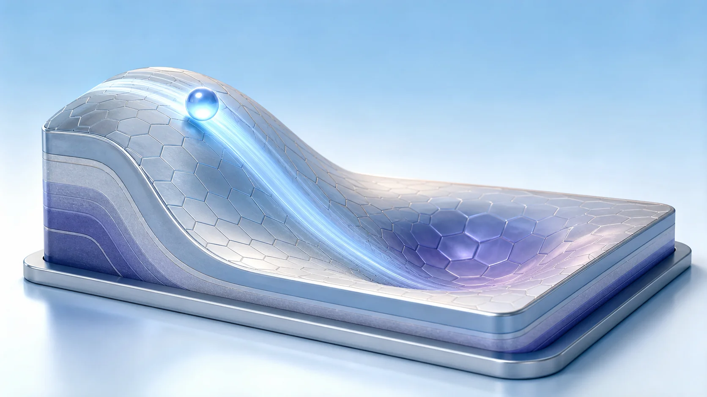
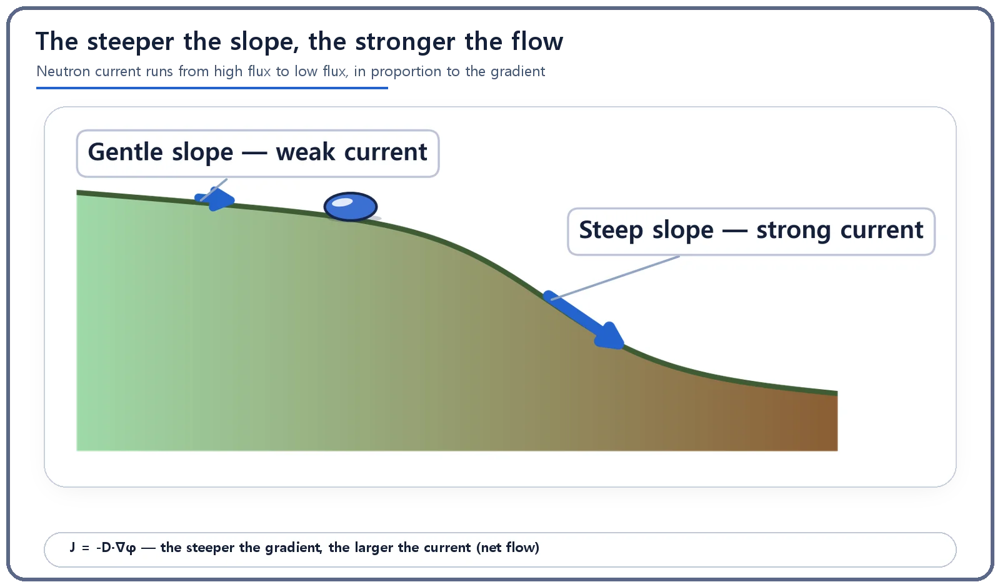
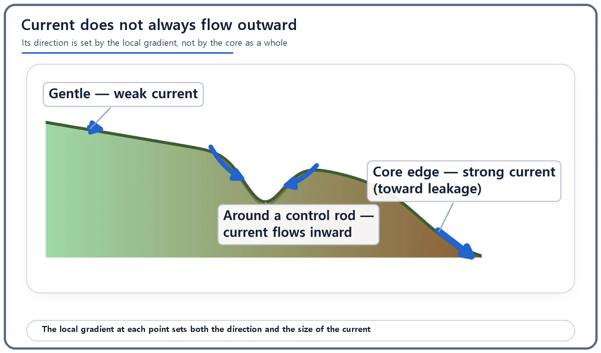

Neutron Physics & the Core · 081
A Drop of Ink That Spreads on Its Own — Neutron Current and the Flux Gradient
Like a ball on a hill, neutrons drift from high flux to low flux, and the steeper the slope, the stronger the flow.

Neutrons flow, on net, from where the neutron flux is high to where it is low, and the steeper the flux gradient, the stronger that flow. This net flow is the neutron current, and one relationship, J = −D·∇φ (Fick's law in diffusion theory), fixes both its direction and its size.
A drop of ink that spreads on its own
Have you ever let a single drop of ink fall into a glass of clear water? Right where it lands, the color stays dark and concentrated. Give it time, though, and it slowly fans out until the whole glass turns a faint shade. Look closer and two questions appear. Why does the ink spread in that particular direction? And why does it sometimes spread quickly, and at other moments seem to barely move at all?
Both questions are answered by a single rule that fixes the direction and the amount at the same time. Remarkably, neutrons moving around inside a reactor core follow exactly the same rule: the link between neutron current and the flux gradient.
Where does a ball on a hill roll, and how fast?
Picture a ball set gently on a bumpy, rolling landscape. Which way it rolls, and how fast, is decided by one thing only: the slope right where it sits. The ball always heads in the direction in which the ground drops away most steeply. On a gentle stretch it creeps along; near a steep drop it races downhill in an instant.
Neutrons in a core move by the same logic. Think of the neutron flux (a measure of how actively neutrons are present at a given spot) as the height of the hill. High flux is a hilltop; low flux is a valley. How steep the hill is at a particular point is the spatial gradient of the flux. The direction and speed of the rolling ball is the neutron current. Neutrons flow from high flux to low flux, and the steeper the gradient, the faster they flow.

One equation that sets direction and size together
Translated into the language of reactor physics, the hill picture becomes:
J = −D·∇φ
| Symbol | Meaning | On the hill |
|---|---|---|
| φ | Neutron flux: how actively neutrons are present at a point (no direction) | Height of the hill |
| ∇φ | Gradient: how sharply the flux changes from place to place | Slope of the hill |
| J | Neutron current: net flow of neutrons in a direction (has direction and size) | Direction and speed of the rolling ball |
| D | Diffusion coefficient: how easily neutrons spread through the material | How slippery the surface is |
On a slicker surface (larger D), a ball rolls down faster on the same slope. Likewise, in a material where neutrons scatter less and travel more freely, more neutrons move on net for the same gradient.
Notice the minus sign. Mathematically, the gradient ∇φ points in the direction in which the value increases most steeply. Neutrons, like balls on hills, move the opposite way, toward where the value decreases. The minus sign flips the direction, so the equation is simply the sentence "neutrons always flow from high flux to low flux, and harder where the gradient is steeper," written in symbols.
In diffusion theory, combining this relationship with the processes that create and remove neutrons lets you calculate the flux distribution across the entire core; J = −D·∇φ is the key ingredient. Here we focus on how J alone sets both direction and size.
Flux and current are not the same thing
Neutron flux (φ) and neutron current (J) sound alike, but they are different kinds of quantity. Flux tells you how crowded a place is, so it has only a size. Current tells you how much is flowing, on net, in a particular direction, so it has both a direction and a size. A spot can have very high flux, with neutrons zipping about busily in every direction, and yet a current close to zero: if the activity is evenly spread, there is no net drift toward any one side.
Another common misconception is that neutron current always flows outward from the center of the core. Flux is often highest in the middle and lower toward the edges, so the impression is understandable. In reality, the direction of the current is set only by the local slope at each point. Insert a control rod, which strongly absorbs neutrons, and the flux around it sinks into a little hollow. Current then flows from the higher ground on every side into that hollow.

Where this equation earns its keep
The current heading from the center of the core toward its edge and the reflector boundary ultimately determines how many neutrons escape from the core (the leakage). One reason reactors surround the core with a reflector is to make the flux gradient near the boundary gentler and so cut the net outflow, just as a ball rolls down a gentle hill more slowly.
The local pile-up of current around control rods is also something core designers take into account when they choose fuel loading patterns and control rod positions, so that power does not concentrate too much in any one spot. The calculated flows are compared with measurements from the actual plant and serve as basic data for confirming that the power distribution stays within its safety margins.
One caution: the hill-and-ball picture conveys a qualitative feel for direction and proportionality. The actual value of the diffusion coefficient D varies widely with the material, the reactor type, and the neutron energy, so no specific numbers are quoted here.
Three things to take with you
Neutron current is the net flow of neutrons from high flux to low flux, stronger where the gradient is steeper. In J = −D·∇φ, the minus sign supplies the direction and D captures how easily neutrons spread through the material. Flux has no direction while current does, and the direction of the current is set by the local gradient at each point, not by the overall trend across the core.